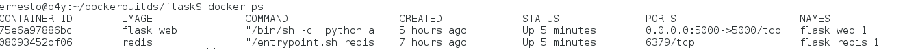

Continuando con los artículos de docker, en este caso se hablará de iniciar dos contenedores donde uno le da servicio al otro, un contenedor tendrá el servicio de redis y el otro será una aplicación web sencilla hecha en flask.
Para poder lograr el manejo de varios contenedores existe docker-compose, para el caso de este artículo el enlace sobre docker-compose en flask lo pueden revisar en el siguiente enlace.
Los artículos anteriores que tratan el tema de docker son:
- Instalar Docker en Debian Jessie
- Uso de Docker en Debian Jessie (parte 1)
- Uso de Docker en Debian Jessie (parte 2)
- Crear una imagen Docker con un archivo Dockerfile
- Iniciando Django usando Docker
- Iniciando Gitlab por medio de Docker
Primero se crea el directorio de trabajo.
mkdir flask
cd flask
Se crea el archivo app.py con el siguiente contenido:
#Se importa flask y redis
from flask import Flask
from redis import Redis
#Se crea la instancia de flask
app = Flask(__name__)
#Se crea la instancia de redis
redis = Redis(host="redis",port=6379)
#Se crea la función hello definiendo la ruta del decorador.
@app.route("/")
def hello():
#Se incrementa el valor de la variable hits de redis
redis.incr('hits')
#Se retorna un mensaje con el valor actual de la variable en redis
return "Hello is me %s...\n" %redis.get('hits')
if __name__ == "__main__":
#Se ejecuta la aplicación en modo debug
app.run(host="0.0.0.0",debug=True)
Se crea el archivo requerimientos.txt, donde se define que se requiere instalar flask y redis:
flask
redis
Se crea el archivo Dockerfile con el siguiente contenido:
FROM python:2.7
WORKDIR /code
ADD requerimientos.txt /code/
RUN pip install -r requerimientos.txt
ADD . /code
CMD python app.py
Se construye la imagen web:
docker build -t web .
Se definen los servicios por medio del archivo docker-compose.yml que contiene lo siguiente:
web:
build: .
ports:
- "5000:5000"
volumes:
- .:/code
links:
- redis
redis:
image: redis
Descripción del archivo docker-compose.yml:
web: Define la imagen llamada web para ser construída, maneja los puertos 5000 local y externo será 5000 también, además se define el directorio volume llamado code, al final para web se define links que hace llamado a la imagen redis.
redis: Se define la imagen redis.
Construir y correr la aplicación con compose:
Desde el directorio donde se encuentran los archivos ejecutar :
docker-compose up
En la siguiente figura se muestra que está corriendo la aplicación:

Al abrir el navegador en en localhost:5000 se tiene lo que muestra la siguiente figura:

Al ejecutar docker ps se tienen los contenedores que se están ejecutando:

También se tiene para docker-compose el comando ps y se obtiene lo siguiente:

El resultado es simplificado con respecto a docker ps.
Para detener los procesos o la ejecución del servicio se usa el comando stop de docker-compose:
docker-componse stop
Con docker compose se puede ejecutar multiples imagenes y usarlas en una aplicación principal, esto logra el concepto de microservicios.
¡Haz tu donativo! Si te gustó el artículo puedes realizar un donativo con Bitcoin (BTC) usando la billetera digital de tu preferencia a la siguiente dirección: 17MtNybhdkA9GV3UNS6BTwPcuhjXoPrSzV
O Escaneando el código QR desde la billetera:

Comments !